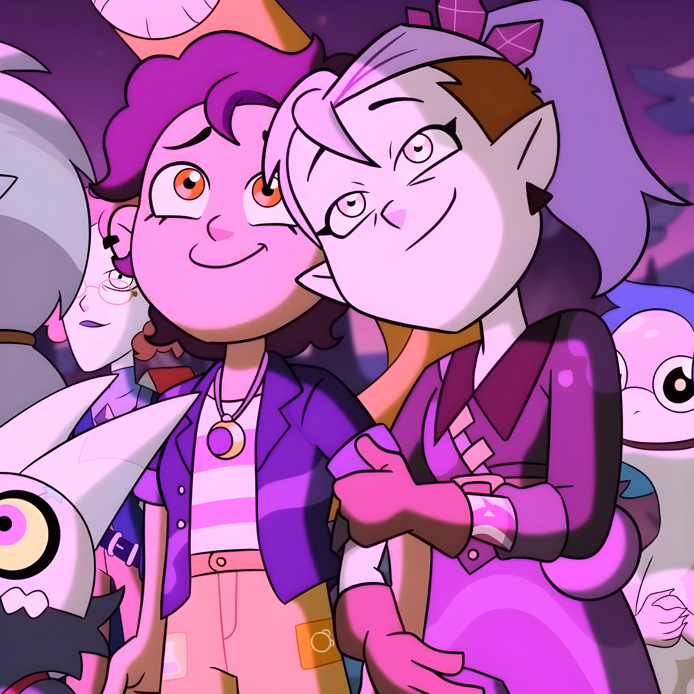

Lumity is a femslash canon ship in the Disney series The Owl House. It is regarded as one of the best relationships in the entire Disney series fandom, but i don't feel the same.
On my own personal opinion, i feel like the relationship development was rushed, probably because TOH was
cancelled and they had to pretty much shorten everything.
It all felt like it was rushed and forced, it's
also not accurate. Who falls in love with the person you bully? Unless they got some mental disorder i cannot
think of a reason why.
Still, there are hardcore shippers that would literally label you as
homophobic just because you don't like Lumity, no matter what the reason, no matter how careful you
choose your words, no matter how respectful you are, if you don't like Lumity, you're homophobic and
a disgrace to society.
I'm sorry stupid dumbass shippers, if you cannot agree with a person who doesn't like a ship and feel like it's
necessary to attack them and label them as homophobic, the disgrace to society is YOU.
I'm saying my opinions with respect, why cannot you respect me back? And don't get me started with those who try
make people change their mind about their shipping opinions. You don't like this ship? You're wrong, you
better like it, in fact, there's reasons why you should like it. Stfu, i have my opinions and reasons,
and you don't have to try and change my opinions. Do i even try to change your opinion about TOH?
I've also read how one shipper LITERALLY laughed at someone's grandfather passing just because they didn't agree with Lumity. Does this make the fandom look good? Of course not! Idiot.
It's god damn annoying how some shippers behave, they always feel like they're in the right, and have the right to insult those who don't agree with, same goes with Nuzi from Murder Drones.
Thanks to these godawful shitty shippers, i cannot enjoy ships, they ruin it by their stupid beliefs, and the fact that i'm AroAce, it just makes it worse.
That's the reason why i don't like the main popular ships of series, not only Lumity, but Nuzi in MD, Rupphire in the case of Steven Universe, and many others. I'd rather ship rather low popularity ships or ships with a small fanbase, such as Huntlow, Oilrose, and Lapidot.
Now, (thanks for reading)/(i'm sorry for making you read) my little rant... but it's something i always wanted to get off my chest.
Oh, and by the way, if you're a shipper that cannot stand others people's opinion, do me a favor and
-FryingPain.